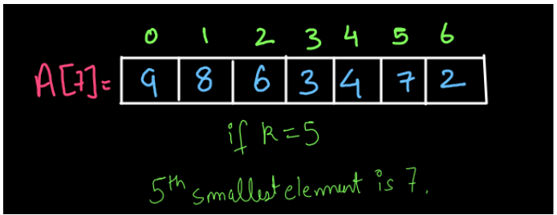
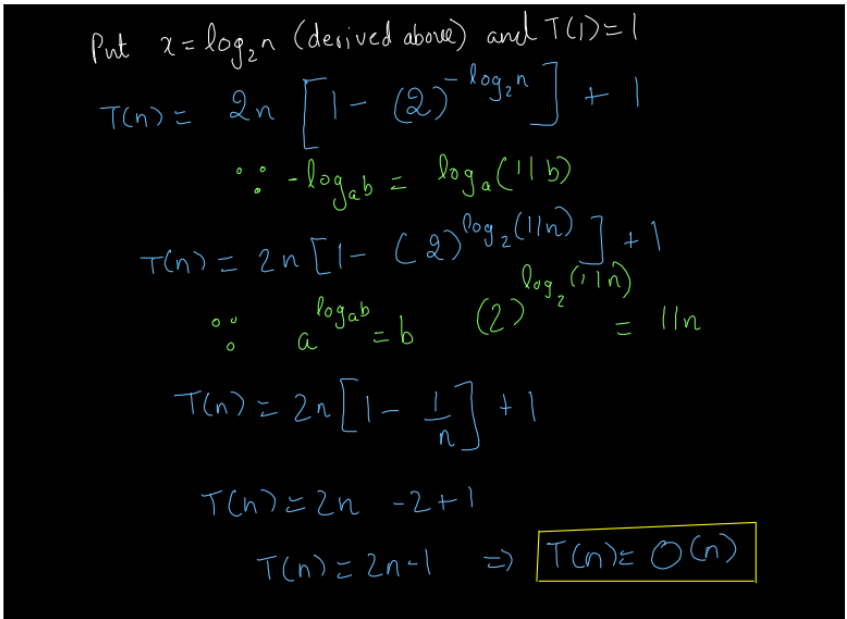

A programmer is a creator of universes for which only he/she is responsible for.
Quick Select
Welcome back, dear reader. So, how is it going? We hope that you are enjoying your coding journey so far and understanding every bit of the concept in detail. So, what is this question all about?
Important links: Problem, Solution video .
UNDERSTANDING THE PROBLEM
We are given an array of integers, and we have to find the kth smallest element in the array using the Quick Select algorithm. For instance, have a look at the diagram given below:

We were given k=5 so, the 5th smallest element in the array is 7. The interesting point in this problem is not to just find the kth smallest element but to do it using the Quick Select algorithm. What is special about this algorithm? The Quick Select Algorithm will enable us to solve this problem in linear time complexity. How? That is what you need to think!!! Don’t worry, we have discussed this process in detail in this article and the solution video. But, we recommend you try to solve this problem on your own first, and then go to the solution.
APPROACH
Partitioning Procedure: Dear reader, if you already know the partition procedure and have solved the PARTITIONING AN ARRAY and the QUICK SORT problems, then you may skip this part as it is the same procedure. If you have not studied this procedure previously, we recommend you refer to the PARTITION AN ARRAY video to understand this procedure completely and also go through the process thoroughly by reading the complete procedure from here as well.
Have a look at the diagram given below:
Here, ‘i’ and ‘j’ variables are kept at the beginning of the array. We have written the conditions below. These conditions are:
The elements between i and last index of the array (i to end) must be the unknown elements meaning we don’t know their values in comparison to pivot i.e. we don’t know whether they are small or greater than the pivot.
The elements between j to i-1 will be the elements larger (in values) than the pivot.
The elements from 0 to j-1 will be smaller than or equal to (in values) than the pivot.
We will try to maintain these conditions while partitioning the array. Initially, the situation is as follows:
Since i=0, elements from ‘i’ till the end are all unknowns i.e. all the elements are unknown to us right now.
Since j is also zero, we do not have any element greater than pivot right now and the same is the case for smaller elements i.e. we do not have any smaller element than pivot initially.
Now, we will start iterating with the ‘i’ variable, and whenever we encounter any element greater than the pivot, we will increment ‘i’ i.e. we will move forward and whenever we encounter any element less than or equal to the pivot, we will swap arr[i] with arr[j] and increment both ‘i’ and ‘j’.
Iterations:
The first and second iterations are shown in the figure above. Since arr[i]< pivot, we swapped arr[i] and arr[j] but, ‘i’ and ‘j’ were at the same position (i=j=0) so the swapping is not noticeable (the array after swapping is shown below the first array and the next iteration is on the right side in the diagram). Then after swapping we increment both ‘i’ and ‘j’ variables.
In the second iteration since arr[i]>pivot, no swapping takes place and only ‘i’ increments.
Similarly, the iterations 3-6 are shown in the diagrams below. We recommend you go through all the iterations by yourself.
Now, we come to the final iteration. Here, ‘i’ reaches the end of the array, and j reaches index 3. Since ‘i’ reached arr.length, we will stop our iterations now. If you notice, in the diagram shown below, pivot=5 is sorted at its position which is called partitioning position i.e j-1. So, the final partitioning position will be j-1.(refer to fig-6)
So, this is the entire partitioning procedure. I hope you got it. If you want to see this process in detail, you may refer to the video here.
Quick Select Algorithm: Have a look at the array given below. We are asked to find the 4th smallest element in the array.
So, we will partition the array selecting the last element as the pivot.
Since the partition position or the partition index (pi=6), means that we got the 7th smallest element of the array. But, we wanted the 4th smallest element which lies in the left part of the array. So, we will not change anything in the right part and perform partition only on the left part of the array.
So, after we partitioned the left part, this time we got the partition index (pi=1) i.e. we got the second smallest element. But, we want the 4th smallest element. So, the partition will happen in the right part of this array (but not the complete right part rather only the part which is left over).
Now, when we partitioned the array, we got the partition index (pi=3) i.e. the 4th smallest element in the array. Since this is what we wanted we will stop here and return arr[pi]=4. So, the condition when we stop the partitioning of the array is pi=k-1 (What is this called?).
You may refer to the solution video (1:03-4:55) if you have any doubts regarding the procedure till here
So, we can perform this procedure using recursion. We will call the quick select function recursively which performs the partition of the array at each call. This is very similar to the Quick Sort Algorithm that we have already studied. So, what is the difference between the two?
Understanding Quick Select Recursion: Have a look at the diagram given below:
We have taken a small array to understand the process easily. If we have to find the 3rd largest element in this array, we first partition the array selecting the last element as pivot. Then, we have to partition only the left side of the array this time, leaving the remaining part of the array as it is as the partition index (pi) which we got was pi=3 and we are searching for the third-smallest element and we want pi=2. After the second partition, we got 3 at its sorted position and pi=1. So, we have to partition on the right side this time. On the third partition, we got pi=2 and we got the third-smallest element i.e. 4.
Difference between Quick Sort and Quick Select: Well obviously, Quicksort is a sorting algorithm and quick select is used for a different purpose we know that. The difference between Quick Sort and Quick Select is that we were applying quick sort on both the remaining parts of the array whereas we are applying quick select recursively, only on one of the remaining parts of the array. So, in Quick Sort there were two recursive calls whereas in Quick Select there will be only one recursive call as shown in the diagram.
The single recursive call will depend upon the value of the partition index:
If the value of partition index pi=k-1, then we will return the value at partition index as the kth smallest value and return from the recursion.
If the value of the partition index pi > k-1 (pi is greater than k-1) then our element will be present in the left half of the array as its value will be smaller than the current pivot. Then the recursive call will be quickSelect(arr,0,pi-1), where low=0 and high=pi-1.
If the value of the partition index pi < k-1 (pi is less than k-1) then our element will be present in the right half of the array as its value will be greater than the current pivot. Then the recursive call will be quickSelect(arr,pi+1,arr.length-1), where low=pi+1 and high=arr.length-1.
Now, the only thing left is the base case. So, what will be the base case?
Base Case: No, no, no!! Here we do not need to draw the Euler tree and trace the Euler path to find out the base case. It is quite simple actually. We will return from the recursion whenever we get our answer. So, we will get our answer whenever we find the element we were looking for i.e. whenever we find the kth smallest element i.e. whenever pi=k-1.
Now that we have everything ready with us, let’s dive into the coding process.
Algorithm:
Partition the array: We have already discussed the procedure to partition an array in the PARTITION AN ARRAY and QUICK SORT questions. We need the same procedure here. We will partition the array taking the last element of the array as a pivot element as shown in the diagram below:
So, after we partition the array, the element selected as the pivot is at its sorted position meaning all the elements smaller than the pivot are before the pivot, and all the elements greater than the pivot are after it in the array.
Check the Partition Position: If after partition, we get the partition position equal to k-1, then we would stop the partition and return the element at the partition position. Else, based on the value of partition position, we will decide which part of the array to partition the next. This will be a recursive call. Have a look at the diagram given below:
Since the partitioning gave us the 4th smallest element (since partition index pi=3) and we were looking for the 5th smallest element, we will perform partitioning in the right part of the array to get the 5th smallest element. Based on the above example the initial and next call would have been:
This is not the actual code or how the actual call will look like. Think of the code based on the above instance and try to solve the problem on your own before moving to the explanation of the solution.
COMPLETE CODE
Now that we have understood the algorithm and its working we try to write the code for the same.
import java.io.*;
import java.util.*;
public class Main {
public static int quickSelect(int[] arr, int lo, int hi, int k) {
int pivot=arr[hi];
int pi=partition(arr,pivot,lo,hi);
if(pi>k)
{
return quickSelect(arr,lo,pi-1,k);
}
else if(pi< k)
{
return quickSelect(arr,pi+1,hi,k);
}
return pivot;
}
public static int partition(int[] arr, int pivot, int lo, int hi) {
System.out.println("pivot -> " + pivot);
int i = lo, j = lo;
while (i <= hi) {
if (arr[i] <= pivot) {
swap(arr, i, j);
i++;
j++;
} else {
i++;
}
}
System.out.println("pivot index -> " + (j - 1));
return (j - 1);
}
// used for swapping ith and jth elements of array
public static void swap(int[] arr, int i, int j) {
System.out.println("Swapping " + arr[i] + " and " + arr[j]);
int temp = arr[i];
arr[i] = arr[j];
arr[j] = temp;
}
public static void print(int[] arr) {
for (int i = 0; i < arr.length; i++) {
System.out.print(arr[i] + " ");
}
System.out.println();
}
public static void main(String[] args) throws Exception {
Scanner scn = new Scanner(System.in);
int n = scn.nextInt();
int[] arr = new int[n];
for (int i = 0; i < n; i++) {
arr[i] = scn.nextInt();
}
int k = scn.nextInt();
System.out.println(quickSelect(arr,0,arr.length - 1,k - 1)); //we passed k-1 as the kth smallest element will be index k-1 in the array
}
}
input
output
Run code
So, dear reader, we hope that you got the above code and procedure completely. Still, if you have any doubts regarding the code, you may refer to the solution video (4:55-7:33) to clear all your doubts. Now, let us analyze the time and space complexity of the above algorithm.
Analysis
Time Complexity
Let us discuss the time complexity in detail mathematically. So, what is the recurrence relation that can be devised from the above code? Let us see. The recurrence relation will be :
Why? Well, as you already know the time taken for the partitioning procedure is O(n) so the n comes from there and we want to obtain the average case time complexity which is the same as best-case complexity in this case. So, we try to find out the best case complexity. The best-case complexity will be when the partitioning happens exactly in the middle of the list. So, after that only half of the elements will be left to search and we are searching half of the elements only. So, T(n/2) comes as a result of the recurrence call (for half of the array). Now, the rest is mathematics. We recommend you to see all the steps (given below) carefully and try to solve this equation on your own also.

So, the average case and best case time complexity is O(n). The worst-case time complexity is O(n2) and this is when the list given to us is sorted and partitioning always happens at one end of the list. Why is this complexity O(n2). Think for yourself!! You may refer to the Quick Sort article for the proof.
Space Complexity
The space complexity of the above algorithm is O(1) as we have not used any extra space for solving this problem.
Dear reader, we hope that you got the entire concept and also got the time and space complexity analysis of the problem. If you still have any doubts regarding the procedure or the code, you may refer to the complete solution video to clear all your doubts.
Some Suggestions:
Here are some suggestions from our side that you don’t want to miss:
The same problem can be solved using an O(n2) approach where we search through the entire array k times at the kth iteration, we find the required value. Although the method we have discussed is efficient, you should know this method also. So, try to code this yourself.
The worst-case time complexity of this method is O(n2). Try to prove it yourself using a recursion tree or by mathematical analysis. Also, try to find out a way to avoid this worst case. We have discussed this in Quick Sort Article also.